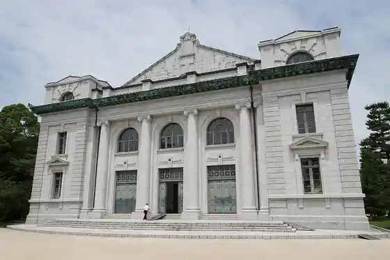
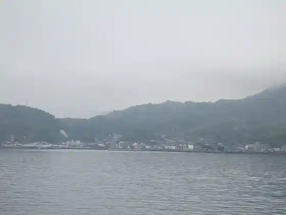

Etajima
Etajima · Hiroshima
Etajima
Highlighted on the Hiroshima map.
Stay
Etajima Onsen Etajima So
AKIZUKI
LIFEMENT GLANZ OKIMI
Etajima Yadori NORA
NORA
Shima no Ie Wa Kokoro / Minpaku
Dining
Sushi Ikesu Ryori Kappo Daigaku
Shiki no Aji Hira no
Dezatopara Arupateio
Izakaya
Wa I Na Tomoshibi
locavore
O Konomi Yaki Daikichi
Nakaneo Konomi Yaki Mise
Cafe Lisboa
Etajima Meijo
Edowazu Rosutarii Kafe
O Konomi Yaki Teppanyaki Ki Hiyori
Satsuki So
Etajima Kafe Uingusu
Tora Hachi
Kanawa Oisuta
Onsen
Etajima Onsen Etajima So Gensen Kake Nagashi (Nuru Yu)
AKIZUKI Furo
LIFEMENT GLANZ OKIMI A to Furo
Etajima Yadori NORA Yokushitsu
NORA Yokushitsu
Sights
Kaijojieitai Dai 1 Jukka Gakko (Kyukaigun Heigakko)
Kyukaigun Heigakko Daikodo

Kyoiku Sanko Kan
Shoyo Minato

Furutaka Yama